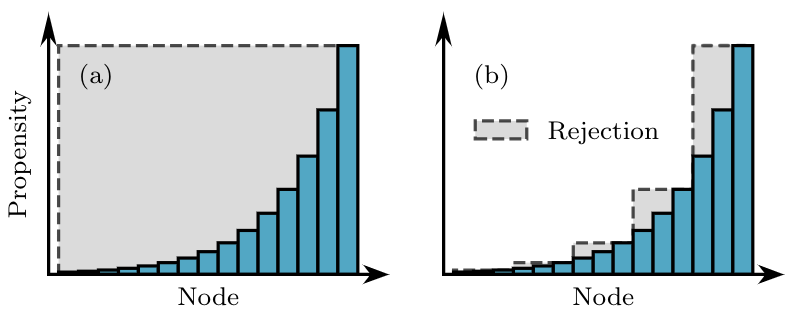

Composition-rejection algorithms for networks#
One key insight from the Gillespie algorithms is that our simulations can save time by combining equivalent events and drawing from a group of events before deciding which exact event occurs. We can call this step a composition of events and it often leads to groupings of events with heterogeneous rates. When drawing from heterogeneous sets of possible events, we can also gain speed by actually drawing events uniformly (which is wrong) but rejecting some of them to exactly compensate this bias. We call this step a rejection.
Merging these two ideas enable us to use a family of composition and rejection algorithms which can be powerful tools when dealing with simulations of heterogeneous systems.
We here explain this idea in the context of spreading processes on heterogeneous networks using a composition and rejection algorithm. The simulation presented here is, at the time of this writing in early 2025, the fastest approach for simulations on dense or heterogeneous unweighted networks.
In what follows, we wish to simulate SIS dynamics on networks. We have a finite population of \(N\) nodes interconnected in some ways. Nodes can be infectious or susceptible. Infectious nodes infect their susceptible neighbours at a rate \(\beta\) and recover at a rate \(\alpha\).
The direct Gillespie simulation approach would therefore be to keep track of all infectious nodes which can recover, and all infectious-susceptible pairs that can lead to an infection. One would then draw an inter-event time for each possible events, run the next event, and update the list of possible events accordingly.
Node-based composition#
On a network, one way to improve on the direct Gillespie simulation is to select nodes rather than events. Indeed, all events occur around infectious nodes: Either directly (recovery) or on one of their edges (infection). For example, if we want to sample uniformly among possible infection events without tracking all pairs of nodes, we can keep track of the degree of infectious nodes and simply draw a random neighbor of a random infectious node drawn proportionally to its degree. Note that we are sampling a possible infection event, as the neighbour might already be infectious. In that case, the event is not wrong; it just does not matter.
We are going to build on this idea by combining all processes associated with a node into a single propensity. The propensity will be proportional to their probability of being drawn for the next event. Adding recovery events to our previous logic, we write the probability of drawing node \(i\) given the state of the system \(x\) as
where \(\omega_i(x)\) is the propensity of node \(i\) to be involved in an event. That propensity is only non-zero if node \(i\) is infectious, which is what we mean with the Kronecker delta \(\delta(x_i,I)\) that equals 1 if the state \(x_i = I\) and zero otherwise. When infectious, the total rate of possible events around node \(i\) is proportional to its total infection rate (\(\beta\) times its degree \(k_i\)) plus its recovery rate \(\alpha\). The denominator is then simply a normalizing factor.
With this approach, we could simulate the process easily assuming we could sample quickly based on \(P(i\vert x)\). The algorithm would then go as follows:
Draw a node \(i\) based on the distribution \(\lbrace P(i\vert x)\rbrace\).
Decide whether the event is a transmission with probability \(\beta k_i / (\beta k_i + \alpha)\) or a recovery with probability \(\alpha / (\beta k_i + \alpha)\)
If a recovery, the node recovers. If a transmission, attempt a transmission to a random neighbour of node \(i\).
Repeat from Step 1.
Rejection sampling#
Assuming that the degree distribution of the network is heterogeneous, so will the distribution \(P(i\vert x)\). How can we efficiently sample nodes from this distribution? One easy technique is to use rejection sampling. We can draw nodes uniformly at random, and only accept the node drawn with some probability so that the total probability of drawing and accepting a specific node is still proportional to its propensity \(\omega_i\). How should we then choose with what probability to accept the draw? We want that probability to be proportional to \(\omega_i\) and at most 1, so we can just use \(\omega_i/\omega_{\textrm{max}}\) where we use the maximum possible propensity \(\omega_{\textrm{max}} = \beta k_{\textrm{max}} + \alpha\).
This rejection idea is illustrated in panel (a) of the figure below. In panel (b) we show how to further improve this idea by now grouping nodes in groups of similar propensity to limit the amount of rejected samples. Indeed, rejection sampling is easy to implement, but the number of draws required for each actual event will scale inversely with the fraction of draws that end up accepted and not rejected. In the figure below, we want to limit the amount of grey area. So we add yet another composition step in our algorithm.

Composition-and-rejection algorithm#
The next step in this algorithm draws once again from advance in complex chemical systems, and we now formally call the resulting approach a composition and rejection algorithm. In this framework, we want to automatically build groupings of nodes such that they minimize the grey area in panel (b) above, while using a number of groups that scales at most logarithmically with the number of nodes. The key is to balance the complexity of sampling a group and the complexity of sampling a node within that group.
To do so, we propose to use \(B\) groups labeled \(b \in [1,B]\). The probability of selecting a group \(b\) will be
where \(W_b(x) = \sum_{i\in b} \omega_i(x)\) is the total propensity of nodes within group \(b\).
To build the groups, we use a systematic approach where we impose a minimum acceptance probability (or maximum rejection probability) of 1/2. Therefore, we expect to get an accepted node from every other draw. Then, knowing that most nodes in the first group will be of propensity close to \(\omega_{\textrm{min}}\) (as can be seen on the left-hand side of panel (b) above) we need the first group to have its own maximum propensity be \(2\omega_{\textrm{min}}\). Likewise, the next group will then need to have its own maximum propensity be \(4\omega_{\textrm{min}}\), then \(8\omega_{\textrm{min}}\) and so on. Overall, the \(b\)-th group will contain nodes whose propensity lies between \(2^{b-1}\omega_{\textrm{min}}\) and \(2^{b}\omega_{\textrm{min}}\). We therefore expect the number of groups needed to scale as
Finally, we now need to be able to draw a grouping of nodes at random efficiently. Since we expect the number of groups to be at most in \(\log N\), we can use a direct sampling. We keep the group propensities \(P(b\vert x)\) in memory and draw from that set using our favorite data structure. In our implementation, we use our own samplable sets which are simple binary trees. Picking a group at random is of order \(\log B\) and therefore at most of order \(\log \log N\). Note that if we had used direct sampling over the node propensity, our simulations would scale as \(\log N\). Gaining an additional logarithmic benefit makes the composition-and-rejection algorithm the fastest current approach to simulating dynamics on networks.